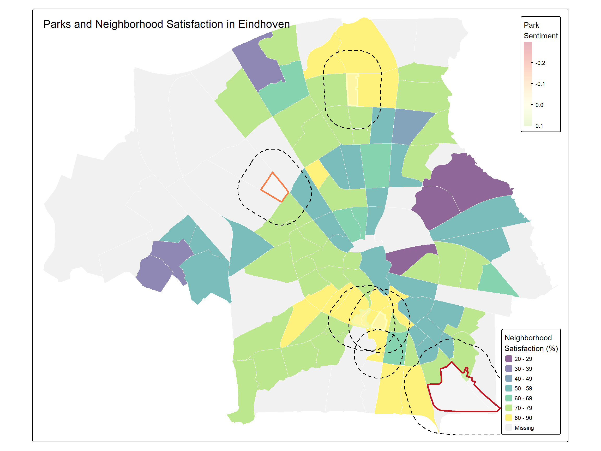
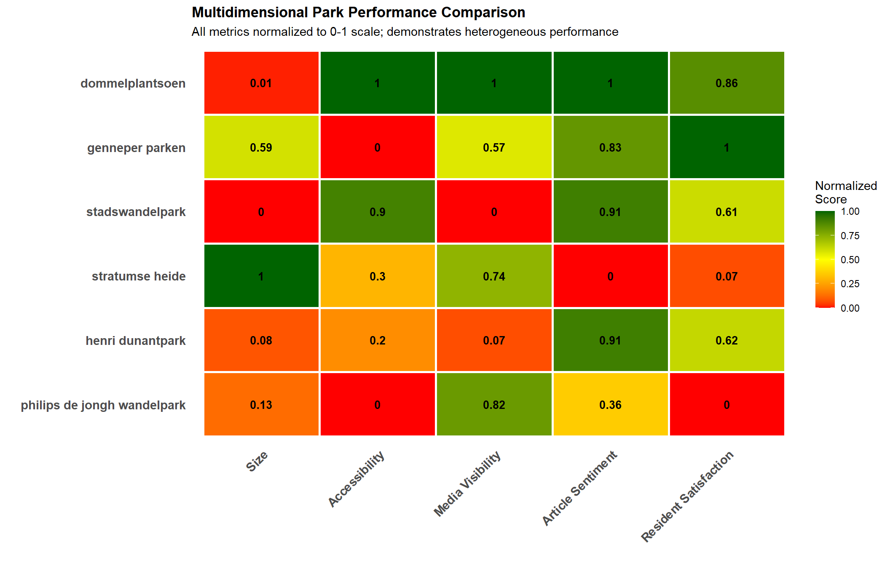

# Load required packages
library(tidyverse)
library(tidytext)
library(LexisNexisTools)
library(reticulate)
library(stringr)
library(stopwords)
library(sf)
# Activate Python virtual environment for NLP models
use_virtualenv("DAFS", required = TRUE)
transformers <- import("transformers")Green Spaces in Eindhoven: Beyond Park Size - Analyzing Population Exposure and Perceived Experience
1 Introduction
1.1 Context and Background
Urban green spaces (UGS) have been shown to influence citizens’ experiences in multiple ways. Contact with nature can reduce stress related to daily activities such as commuting (Hartig et al., 2003), mitigate negative emotions such as anger (Maas et al., 2009), and is associated with higher levels of subjective well-being (Dinter et al., 2022). Moreover, increased availability of green space has been linked to reduced adult mortality (van den Berg et al., 2015), improved social capital, and lower stress levels (Mitchell and Popham, 2008; Maas et al., 2012). The World Health Organization further identifies multiple pathways through which green space contributes to physical and mental health outcomes (Hogendorf et al., 2020).
Green spaces also provide environmental benefits (and associated social benefits), such as a cooling effect, which mitigates the urban heat island effect which may become a more prevalent issue with rising urban populations and increasing frequency of heat events (Mensah et. al., 2016; Zhou et al., 2023). Additionally, green spaces can provide ecosystem services, preserve the natural environment and biodiversity in cities or improve air quality, which is related to SDG 11.6 (Ai et al., 2023; Kuklina et al., 2021).
Recognizing the importance of UGS accessibility, the United Nations have included a Sustainable Development Goal (SDG), Target 11.7, which aims to “provide universal access to safe, inclusive and accessible, green and public spaces, in particular for women and children, older persons and persons with disabilities” (United Nations, 2015). Following the United Nations guidelines, many cities around the world have been drawing attention to the improvement, accessibility and quality of urban green spaces such as parks.
Parks, nature reserves, and recreational areas provide essential ecosystem services, support biodiversity, and contribute to the physical and mental wellbeing of urban residents. However, the conventional approaches to evaluating green space are often limited. For instance, total park area is a single metric that is often used to assess UGS. This size-focused perspective assumes that larger parks automatically provide greater benefits and serve more residents. Physical distance is another example of the research field limiattions. Proximity, total size and other single scope indicators are being increasingly questioned in urban planning literature.
Recent research suggests that factors such as spatial distribution, accessibility, park quality, and resident perception may be equally or more important than sheer size in determining the actual value and use of urban green spaces. A park that is large but remotely located may serve fewer residents than a smaller but centrally positioned park. Similarly, poorly maintained or ecologically degraded parks may generate negative perceptions despite their size.
The city hosen for analysis is Eindhoven, Netherlands. It is a medium-sized Dutch city with a diverse portfolio of green spaces, ranging from large peripheral nature reserves to small neighborhood parks. The city has experienced rapid growth and development, making the efficient provision of accessible, high-quality green spaces increasingly important for sustainability and livability. However, there has been a negative change in the UGS area (removal of UGS) due to rapid urbanization in addition to the worsening air quality in the city (Ascenso et al., 2020; Noordzij et al., 2019).
1.2 Research Question
Given the limitations of measuring UGS provision, quality and overall public pereption, this analysis investigates the following central research question:
To what extent does park size alone explain differences in population exposure and perceived experience of green spaces in Eindhoven?
We hypothesize that factors beyond mere size, particularly funcitonal identity and spatial accessiility, significantly influence both population exposure (measured through spatial accessibility) and public perception (measured through sentiment expressed in media discourse and resident satisfaction surveys).
1.3 Objectives
To address the research question, this study adopts a multi-method approach structured around three closely related aims. First, it investigates the spatial relationship between park size and neighborhood accessibility by assessing whether larger parks necessarily provide greater population exposure. Using geospatial buffer analysis at multiple walking distances (300 m, 600 m, and 1,000 m), the analysis evaluates how many neighborhoods are within realistic pedestrian reach of each park, thereby moving beyond simple proximity measures to capture distance-decay effects and everyday accessibility patterns.
Secondly, public perception of urban green spaces is assessed through textual analysis. The media used for the analysis was mainly scientific and news articles related to Eindhoven parks. Natural Language Processing (NLP) techniques such as Thematic Profiling (TF-IDF) and Emotional Dimension Analyis (VAD) were used to identify which parks receive media attention, the dominant themes associated with them, and whether sentiment varies independently of park size.
Lastly, the research explores the extent to which media discourse aligns with residents’ lived experiences by comparing article-based sentiment scores with neighborhood-level satisfaction indicators derived from municipal survey data.
2 Data and Methods
2.1 Data Sources
This analysis integrates three primary data sources to provide a comprehensive assessment:
2.1.1 1. Textual Data: News Articles
To analyze public discourse surrounding urban green spaces, we compiled a specific corpus of news articles using the LexisNexis Uni database.
Data Source: The dataset consists exclusively of Dutch-language news articles derived from national and regional newspapers (e.g., Eindhovens Dagblad, AD).
Timeframe: The analysis covers the period from 2024 to 2026, capturing the most recent developments, maintenance issues, and public events.
Selection Criteria: The corpus was constructed using a targeted search strategy. Initial queries focused on general terms (e.g., “Eindhoven” AND “Park”), followed by specific queries for seven key locations (e.g., “Genneper Parken”, “Stadswandelpark”) to ensure balanced coverage of both major and minor green spaces.
2.1.2 2. Geospatial Data: Park Boundaries
Park boundary data were derived from OpenStreetMap (OSM), an open-source and community-maintained geographic database widely used in spatial analysis. Using OSM’s thematic classifications, park polygons were extracted for features tagged as parks (leisure = park), nature reserves (leisure = nature_reserve), and recreation grounds (leisure = recreation_ground). These categories were selected to capture a broad range of publicly accessible green spaces within Eindhoven. In addition to these features, Karpendonkse Plas was manually incorporated into the park dataset. Although this site is primarily classified in OSM as a water body rather than a park, it holds clear recreational significance and appeared frequently in the textual analysis, thus was included for consistency.
2.1.3 3. Geospatial Data: Neighborhood Boundaries and Satisfaction Metrics
Neighborhood boundary data and resident satisfaction indicators were obtained from the municipality’s official open data portal. This dataset provided polygon boundaries for neighborhoods (buurten), along with administrative identifiers that allow for spatial aggregation and comparison. In addition to spatial information, the dataset includes survey-based measures of resident satisfaction related to the urban environment. These indicators capture perceptions of;
- Satisfaction with park tree maintenance
- Satisfaction with green space design
- Satisfaction with green space maintenance
- Environmental nuisances (air pollution, noise, drought impacts
This made it possible to compare neighborhood-level satisfaction patterns with sentiment derived from the textual analysis, thereby strengthening the approach of this study.
2.2 Methods (NLP)
2.2.1 Textual Analysis Methods
To assess the public’s perception of Eindhoven’s green spaces, we have developed a multi-stage Natural Language Processing (NLP) framework. After collecting the data and removing duplicate headlines, a Targeted Keyword Extraction approach was used to identify verified mentions of specific parks at the sentence level. The analysis then integrated three computational methods to correlate the physical attributes of a park with the specific emotional responses they produce in the public.
2.2.1.1 Step 1: Data Preparation and Location Extraction
2.2.1.1.1 1. Initial Query
Data collection was conducted using the Nexis Uni database to capture public sentiment and local discourse regarding urban green spaces. The search strategy was initiated with a core set of inclusion terms, combining the location “Eindhoven” with keywords related to greenery, such as bomen, parken, groene ruimte, and stadsnatuur. Following the initial retrieval, a manual inspection of the results was performed to assess relevance, and this process revealed significant noise where target keywords appeared in unrelated contexts. To address this, an iterative filtering strategy was employed: non-relevant topics such as sports (e.g., PSV, football), traffic accidents, commercial advertisements, and weather reports were identified during manual review, and then systematically added to an exclusion list. This step-by-step refinement continued until the dataset achieved high precision. The final Boolean query, which yielded a total of 609 results from 2024-2026, is as follows:
Eindhoven AND (bomen OR parken OR plantsoen OR “openbaar groen” OR “groene ruimte” OR stadsnatuur OR “bomenkap”) AND NOT (PSV OR voetbal* OR stadion OR wedstrijd OR “Next Nature” OR parkeer* OR garage OR Efteling OR pretpark OR “theme park” OR energie OR waterstof OR zonnepaneel OR GroenLinks OR “High Tech Campus” OR “Science Park” OR rups OR rupsen OR “eikenprocessierups” OR vleermuis* OR bever* OR excursie OR speurtocht OR wandeling OR “Nacht van de” OR IVN OR KNNV OR trouw* OR bruiloft* OR festival OR uitje OR “indebuurt” OR Glow OR lichtkunst OR lichtfestival OR ranglijst OR “ter wereld” OR Singapore OR Kopenhagen OR vakantie OR reis OR reizen OR Sinterklaas OR sint OR piet OR schoen* OR cadeau* OR kerst* OR diefstal OR gestolen OR politie OR getuigen OR overval OR Spaans OR Duitse OR botsing OR ongeluk OR crash OR gewond OR ambulance OR traumahelikopter OR brandweer OR snelweg OR A2 OR N2 OR asfalt OR Disney OR Tilburg OR Helmond OR fysio* OR therapeut* OR patiënt* OR revalidatie OR kliniek OR ziekenhuis OR pijn OR arts OR dokter OR “door de bomen het bos” OR horeca OR restaurant OR terras OR proeflokaal OR menu OR keuken OR Gillis OR “Massa is Kassa” OR KNMI OR onweer OR storm OR vlucht* OR vliegveld OR KLM OR Transavia OR Maxima OR koning OR kabouter* OR kraker OR krakers OR kraken OR rellen OR relschopper OR plunder* OR werkstraf OR avondklok OR noodweer OR wolken OR bliksem*)
2.2.1.1.2 2. Location Discovery via Named Entity Recognition (NER)
NER was used as an unsupervised method to identify which specific green spaces were most prominent in the public discourse.
2.2.1.1.3 3. Virtual Environment Setup
We utilized the dslim/bert-large-NER model via the Hugging Face transformers library in Python, integrated into R using reticulate.
2.2.1.1.4 4. Article Processing & Location Extraction
The 609 articles were first merged and segmented into individual sentences, which is crucial for accurately associating a specific location with its immediate sentiment context.
Phase 1: Exploratory Discovery (NER)
We applied the dslim/bert-large-NER model to the initial raw corpus. This exploratory step served to identify potential target locations and understand the general landscape of the discourse.
# 1. Load multiple article files
# file 1: Initial batch (500)
# file 2: The remaining batch (109)
print("Select the first article file...")
file1 <- file.choose() #raw1.DOCX
print("Select the second article file...")
file2 <- file.choose() ##raw2.DOCX
# Combine paths
my_files <- c(file1, file2)
# Read the files using LexisNexisTools
dat <- lnt_read(my_files)
# Convert to data frame
LN_dataframe <- lnt_convert(dat, to = "data.frame")
# Basic cleaning (Deduplicate & Remove very short texts)
LN_dataframe <- unique(LN_dataframe)
LN_dataframe$length <- nchar(LN_dataframe$Article)
LN_dataframe <- subset(LN_dataframe, length >= 200)
# 2. active NER model
ner_pipeline <- transformers$pipeline(
task = "ner",
model = "dslim/bert-large-NER",
aggregation_strategy = "simple"
)
# 3. cut 609 newspaper into sentences
# keep ID and Date for further emerging
sentences_df <- LN_dataframe %>%
select(ID, Date, Article) %>%
unnest_tokens(sentence, Article, token = "sentences") %>%
mutate(sentence_id = row_number()) # unique ID for each sentences
# 4. define the function
extract_locations <- function(text) {
tryCatch({
res <- ner_pipeline(text)
if(length(res) > 0) {
# only extract LOC (location)
locs <- map_df(res, ~data.frame(
entity_group = .x$entity_group,
word = .x$word,
score = .x$score
)) %>% filter(entity_group == "LOC")
return(locs)
} else { return(NULL) }
}, error = function(e) { return(NULL) })
}
# 5. NER processing
# use map function to put all outcomes in the list
sentences_df$ner_results <- map(sentences_df$sentence, extract_locations)
# 6. outcomes
location_sentiment_df <- sentences_df %>%
select(ID, Date, sentence_id, sentence, ner_results) %>%
unnest(ner_results) %>%
filter(!is.na(word))
# Count location frequency to identify top parks
top_locations <- location_sentiment_df %>%
count(word, sort = TRUE) %>%
head(20)
# This reveals Dommel, Genneper, etc. as top hits.
# save
#save(sentences_df, location_sentiment_df, file = "backup_NER_result.RData")While the NER model successfully identified major entities, a manual inspection of the results revealed significant noise (e.g., fragmentation like “##hoven”) and ambiguity (confusing the city “Eindhoven” with specific parks). Consequently, we determined that a more rigorous, dictionary-based approach was necessary for the final analysis.
Phase 2: Targeted Extraction
To overcome the limitations and problems in Phase 1, we switched to a Targeted Keyword Extraction strategy. This approach utilizes a validated “white list” of 9 major green spaces. This process also implemented strict deduplication at the headline level to ensure that the frequency counts reflect genuine discourse volume rather than duplicate news wires.
# 1. Preparation: Clean & Segment
# Ensure we are working with unique articles only
sentences_df <- LN_dataframe %>%
distinct(Headline, .keep_all = TRUE) %>% # Deduplicate articles first
select(ID, Date, Headline, Article) %>%
unnest_tokens(sentence, Article, token = "sentences")
# 2. Define Target Scope (The "White List")
# Validated list of major green spaces in Eindhoven
target_parks <- c(
"Genneper",
"Stadswandel",
"Philips de Jongh",
"Karpendonk",
"Henri Dunant",
"Dommel",
"Eckart",
"Stratumse Heide",
"Wandelpark"
)
# Create regex pattern
target_pattern <- paste(target_parks, collapse = "|")
print(paste("Filtering corpus for target locations:", target_pattern))
# 3. Targeted Extraction
# Filter sentences that explicitly mention these parks
park_sentences <- sentences_df %>%
filter(str_detect(sentence, regex(target_pattern, ignore_case = TRUE))) %>%
mutate(
# Extract the name and standardize it
found_park = str_extract(sentence, regex(target_pattern, ignore_case = TRUE)),
found_park = str_to_title(found_park)
)
# 4. Frequency Count
# We only report the volume of mentions to validate our target list
park_counts <- park_sentences %>%
count(found_park, sort = TRUE)
print(park_counts)Output: By aggregating frequency counts, seven distinct green spaces emerged as the primary clusters of public discourse:
1 Dommel 81
2 Philips De Jongh 63
3 Karpendonk 59
4 Stratumse Heide 48
5 Genneper 35
6 Henri Dunant 8
7 Wandelpark 5
8 Stadswandel 42.2.1.2 Step 2: Final Corpus Construction
2.2.1.2.1 1. Second Query
However, a preliminary frequency count of these identified entities revealed a significant data disparity. Major corridors like Dommel were over-represented, while neighborhood parks like Henri Dunantpark had insufficient coverage for robust statistical analysis. To correct this bias before proceeding to sentiment analysis, we conducted a targeted query (Snowball Sampling) for the under-represented locations for the same 2024–2026 period as follows:
“Stratumse Heide” OR “Henri Dunant” OR “Karpendonk” OR “Philips de Jongh”) AND “Eindhoven”
2.2.1.2.2 2. Data Integration and Final Cleaning
We merged the initial exploratory dataset with the supplementary targeted dataset. To ensure the integrity of the final analysis, a rigorous cleaning pipeline was applied to the combined corpus at this stage:
# Data Integration & Cleaning
# 1. Load the supplementary file (snowball sampling)
file3 <- file.choose() #raw3.DOCX
# 2. Combine ALL data sources (Initial + Supplementary)
# Note: file1 and file2 were defined in the previous step.
# If running this independently, ensure all files are selected.
if(!exists("file1")) file1 <- file.choose() # select "raw1"
if(!exists("file2")) file2 <- file.choose() # "raw2"
my_files <- c(file1, file2, file3)
print("Merging the following datasets:")[1] "Merging the following datasets:"print(my_files)[1] "D:\\R\\RtmpALUnyR\\Assignemnt\\Final\\raw2.DOCX"
[2] "D:\\R\\RtmpALUnyR\\Assignemnt\\Final\\raw3.DOCX"
[3] "D:\\R\\RtmpALUnyR\\Assignemnt\\Final\\raw1.DOCX"# 3. Read and Merge all articles
dat <- lnt_read(my_files)
# 4. Convert to Data Frame
LN_dataframe <- lnt_convert(dat, to = "data.frame")
print(paste("Total raw articles:", nrow(LN_dataframe)))[1] "Total raw articles: 790"# 5. The "Gatekeeper" Cleaning Pipeline
# Apply consistent cleaning to the full merged dataset
LN_dataframe_clean <- LN_dataframe %>%
# Global Deduplication: Keep first instance of unique headlines
distinct(Headline, .keep_all = TRUE) %>%
# Calculate text length
mutate(length = nchar(Article)) %>%
# Remove noise (articles too short to be meaningful)
filter(length >= 200)
print(paste("Final Cleaned Corpus Size:", nrow(LN_dataframe_clean)))[1] "Final Cleaned Corpus Size: 332"# 6. Update main variable for subsequent analysis
LN_dataframe <- LN_dataframe_clean2.2.1.2.3 Step 3: Sentence-Level Filtering and Attribution
To ensure high precision in sentiment attribution, we transitioned the unit of analysis from the article level to the sentence level. Thus, cleaned corpus were segmented into individual sentences and applied a strict keyword matching algorithm to isolate context. A sentence was assigned to a specific park only if it contained the corresponding identifying keywords.
# Split articles into sentences
sentences_df <- LN_dataframe %>%
select(ID, Date, Headline, Article) %>%
unnest_tokens(sentence, Article, token = "sentences") %>%
mutate(sentence_id = row_number())
print(paste("Sentence splitting complete. Total sentences:", nrow(sentences_df)))[1] "Sentence splitting complete. Total sentences: 57777"# Keyword matching for 7 major parks
print("Matching park names...")[1] "Matching park names..."# 2. Attribution: Assign sentences to specific parks
park_sentences <- sentences_df %>%
mutate(found_park = case_when(
# Case-insensitive matching
str_detect(sentence, regex("Genneper", ignore_case = TRUE)) ~ "Genneper",
str_detect(sentence, regex("Stadswandel", ignore_case = TRUE)) ~ "Stadswandel",
str_detect(sentence, regex("Dommel", ignore_case = TRUE)) ~ "Dommel",
# Use full name for Philips to avoid matching Philips electronics company
str_detect(sentence, regex("Philips de Jongh", ignore_case = TRUE)) ~ "Philips De Jongh",
str_detect(sentence, regex("Karpendonk", ignore_case = TRUE)) ~ "Karpendonk",
str_detect(sentence, regex("Stratumse", ignore_case = TRUE)) ~ "Stratumse Heide",
str_detect(sentence, regex("Henri Dunant", ignore_case = TRUE)) ~ "Henri Dunant",
TRUE ~ NA_character_ # Mark as NA if not matching
)) %>%
# Keep only sentences containing the 7 parks
filter(!is.na(found_park))
# Results
print("Matching complete!")[1] "Matching complete!"print(table(park_sentences$found_park))
Dommel Genneper Henri Dunant Karpendonk
75 44 8 59
Philips De Jongh Stadswandel Stratumse Heide
62 3 56 2.2.1.2.3.1 Note: For general terms like “Philips”, we enforced strict regex patterns (e.g., “Philips de Jongh”) to prevent false positives associated with the electronics company or the stadium.
Output:
Dommel 75
Genneper 44
Henri Dunant 8
Karpendonk 59
Philips De Jongh 62
Stadswandel 3
Stratumse Heide 562.2.1.2.4 Step 4: Sentiment Analysis
Given the news texts are Dutch, we utilized the cardiffnlp/twitter-xlm-roberta-base-sentiment model. This is a multilingual, transformer-based model fine-tuned on a massive dataset of annotated sentiments. Unlike lexicon-based approaches (which rely on word lists), this transformer model captures context, sarcasm, and negation, offering superior performance for complex news narratives.
# 1. Initialize the Multilingual Model
# XLM-RoBERTa is used because it supports Dutch natively
sentiment_classifier <- transformers$pipeline(
task = "text-classification",
model = "cardiffnlp/twitter-xlm-roberta-base-sentiment",
tokenizer = "cardiffnlp/twitter-xlm-roberta-base-sentiment",
return_all_scores = FALSE # We only need the top label
)
# 2. Optimize Processing: Deduplicate
# Processing NLP models is slow; we only analyze unique sentences
unique_sentences_new <- park_sentences %>%
distinct(sentence_id, sentence) %>%
mutate(
sentiment_label = NA_character_,
sentiment_conf = NA_real_ # Confidence score (e.g., 0.98 certainty)
)
print(paste("Running model on", nrow(unique_sentences_new), "unique sentences..."))[1] "Running model on 307 unique sentences..."# 3. Batch Processing Loop
total <- nrow(unique_sentences_new)
for(i in 1:total) {
# Progress bar
if(i %% 50 == 0) cat(sprintf("\rProgress: %d / %d (%.1f%%)", i, total, (i/total)*100))
try({
# Truncate to 512 chars to avoid model input limit errors
# (Note: Strictly speaking, limit is 512 tokens, but chars is a safe proxy)
text_input <- substr(unique_sentences_new$sentence[i], 1, 512)
# Run Model
res <- sentiment_classifier(text_input)
# Extract results
unique_sentences_new$sentiment_label[i] <- res[[1]]$label
unique_sentences_new$sentiment_conf[i] <- res[[1]]$score
}, silent = TRUE)
}
Progress: 50 / 307 (16.3%)
Progress: 100 / 307 (32.6%)
Progress: 150 / 307 (48.9%)
Progress: 200 / 307 (65.1%)
Progress: 250 / 307 (81.4%)
Progress: 300 / 307 (97.7%)print("\nAnalysis complete. merging results...")[1] "\nAnalysis complete. merging results..."# 4. Quantification
# Join back to original data and convert to numeric scale
park_sentences_final <- park_sentences %>%
left_join(unique_sentences_new %>% select(sentence_id, sentiment_label, sentiment_conf),
by = "sentence_id") %>%
mutate(
numeric_sentiment = case_when(
sentiment_label == "positive" ~ 1,
sentiment_label == "negative" ~ -1,
TRUE ~ 0 # neutral
)
)
#Sanity check, this file is used for the next step2.2.1.2.5 Step 5: Statistical Aggregation and Standarlization
To translate sentence-level sentiment into actionable insights, we aggregated the data to the park level. Meanwhile, we used Z-score transformation to standardize the mean sentiment scores to make a fair comparison between parks with different coverage volumes.
This transformation normalizes the data by setting the cohort average to 0 and the standard deviation to 1. A positive Z-score indicates sentiment above the city average, and a negative Z-score indicates performance below the cohort baseline. This standardized metric is the main variable used in the subsequent geospatial visualization and correlation analysis.
# 1. Aggregation: Summarize metrics by Park
park_sentiment_summary <- park_sentences_final %>%
group_by(found_park) %>%
summarise(
mention_count = n(), # Total volume of discourse
avg_sentiment = mean(numeric_sentiment, na.rm = TRUE), # Raw sentiment score
sentiment_intensity = sum(abs(numeric_sentiment)), # Total emotional intensity
controversy = sd(numeric_sentiment, na.rm = TRUE), # Standard deviation (optional but good)
.groups = "drop"
) %>%
mutate(
# 2. Standardization: Calculate Z-Score
# Comparison against the city average (mean=0, sd=1)
z_sentiment = scale(avg_sentiment)[,1],
# 3. Classification (CRITICAL step for visualization alignment)
# use Z-Score to determine relative performance.
performance_type = ifelse(z_sentiment >= 0, "Above Average", "Below Average")
)
print(park_sentiment_summary)# A tibble: 7 × 7
found_park mention_count avg_sentiment sentiment_intensity controversy
<chr> <int> <dbl> <dbl> <dbl>
1 Dommel 75 0.0267 14 0.434
2 Genneper 44 -0.0227 13 0.549
3 Henri Dunant 8 0 2 0.535
4 Karpendonk 59 -0.136 8 0.345
5 Philips De Jongh 62 -0.161 12 0.413
6 Stadswandel 3 0 0 0
7 Stratumse Heide 56 -0.268 23 0.587
# ℹ 2 more variables: z_sentiment <dbl>, performance_type <chr># 4. Save Final Data
#write_csv(park_sentiment_summary, "sentiment_analysis.csv")In this step, we used Term Frequency-Inverse Document Frequency (TF-IDF) analysis to find out what makes each park unique. The main process included:
1. Custom Filtering (Stopwords)
Standard lists were not enough, a custom filter was created to reduce noise:
Basic words: Removed common Dutch function words (de, het, een).
Self-references: Removed the names of the parks themselves (Genneper, Dommel) and generic suffixes (park, plas) to focus on descriptive content.
Filler content: Excluded low-value terms related to time (vandaag, jaar) or general administration (vergaderen).
2. Standardizing Words
Text are cleaned the by converting words to their base form (lemmatization). For example, watermolens (plural) became watermolen (singular). This ensured that different forms of the same word were counted as a single concept.
3. Defining Park Profiles
TF-IDF scores were calculated and grouped the top words into six functional themes. This helped distinguish, for example, whether a park is discussed mostly as a nature reserve or a recreational hub. The themes are:
- Ecological: natuur, biodiversiteit
- Landscape: pad, heuvel, route
- Cultural: monument, watermolen
- Recreation: paviljoen, spelen
- Risk: bedreigt, kappen
- Spatial: grens, zuiden
# A. Standard Stopwords (Dutch & English noise)
stop_nl <- stopwords::stopwords("nl", source = "stopwords-iso")
stop_en <- stopwords::stopwords("en", source = "stopwords-iso")
# B. Context-specific Stopwords: Remove park names and location suffixes
stop_places <- c(
"eindhoven", "park", "parken", "brabants", "brabant",
"dommel", "genneper", "stadswandel", "stadswandelpark",
"philips", "jongh", "stratumse", "karpendonkse", "karpendonk",
"henri", "dunant", "dunantpark",
"plas", "schuttersbos", "blixembosch", "eckart", "wandelpark",
"lenneppark", "villapark", "mispelhoef", "jonghpark"
)
# C. Structural Stopwords: Remove verbs, conjunctions, and admin terms
stop_structure <- c(
"jaar", "jaren", "woensdag", "vandaag", "destijds",
"ligt", "bestaat", "werd", "heeft", "hebben", "gemaakt",
"waaronder", "betrokkenen", "gevolgd", "verzamelden",
"deel", "onderdeel", "grondgebied", "gebied",
"volgens", "tijdens", "waarbij", "sinds", "zodat", "omdat",
"wel", "ook", "niet", "gaan", "staan", "komen",
"genoemd", "hidden", "garden", "achtte", "duur",
"samenwerking", "bestuurslid", "borden", "beide", "naast", "1wat"
)
# D. Specific Noise: Street names and ambiguous verbs
stop_specific <- c(
"thijmlaan", "alberdingk", "thijm", "laan",
"bestond", "gedwongen"
)
# Combine all lists into one master filter
nl_stopwords_full <- c(stop_nl, stop_en, stop_places, stop_structure, stop_specific)
# 2. Cleaning
# Safety Check: Ensure input data exists
if(!exists("park_sentences_fixed")) {
if(exists("park_sentences")) park_sentences_fixed <- park_sentences
}
park_keywords_clean <- park_sentences_fixed %>%
select(found_park, sentence) %>%
unnest_tokens(word, sentence) %>%
# Basic cleaning: Remove stopwords and numbers
filter(!word %in% nl_stopwords_full) %>%
filter(!str_detect(word, "^[0-9]+$")) %>%
filter(nchar(word) > 3) %>%
# Manual Lemmatization: Standardize singular/plural forms
mutate(word = case_when(
word == "watermolens" ~ "watermolen",
word == "heuvels" ~ "heuvel",
word == "nesten" ~ "nest",
word == "bomen" ~ "boom",
TRUE ~ word
)) %>%
# Frequency count
count(found_park, word) %>%
# Calculate TF-IDF
bind_tf_idf(word, found_park, n)
# 3. Narrative Categorization
park_keywords_final <- park_keywords_clean %>%
filter(n >= 1) %>%
group_by(found_park) %>%
slice_max(tf_idf, n = 8, with_ties = FALSE) %>%
ungroup() %>%
# Assign Functional Categories based on keyword meaning
mutate(narrative = case_when(
# Ecological & Nature
word %in% c("biodiversiteit", "natuur", "heide", "bomen", "boom", "groen", "landschap", "bossen", "ecologische", "beheer", "geplante") ~ "Ecological value",
#Landscape & Access
word %in% c("glooiende", "heuvel", "water", "oever", "pad", "route", "dommelpad", "wandelroute", "beek", "riolering", "vernieuwd") ~ "Landscape & Access",
# Cultural & Heritage
word %in% c("watermolen", "verhaal", "monument", "historie", "erfgoed", "monumentale") ~ "Cultural heritage",
# Recreation & Usage (Includes Commercial)
word %in% c("paviljoen", "concours", "spelen", "recreatie", "wandelen", "horeca", "stadspaviljoen", "parkpaviljoen", "boot", "kiosk", "familierestaurant", "zaak", "opent", "menu") ~ "Recreation & use",
#Environmental Risk & Maintenance
word %in% c("bedreigt", "aziatische", "hoornaar", "nest", "vijand", "waarschuwt", "gevaar", "overlast", "verstoren", "beschadigd", "kappen", "juristen", "versleten") ~ "Environmental risk",
# Geographical Context
word %in% c("limburg", "belgië", "grens", "stroomt", "zuiden", "waterschap") ~ "Geographical context",
TRUE ~ "Other"
))2.2.1.2.6 Step 7: Emotional Dimension Analysis (VAD)
To capture emotional nuance beyond binary polarity (positive/negative), we utilized the vad-bert transformer model.
The model was applied to every unique sentence in the filtered corpus. We computed the Valence, Arousal, and Dominance scores for each sentence and then aggregated these values by park (using the mean) to derive the distinct emotional profile of each location.
# 1. Data Preparation
# Ensure the dataframe with sentences exists
if(!exists("park_sentences_fixed")) {
stop("Error: 'park_sentences_fixed' not found. Please run previous data cleaning steps.")
}
# 2. Load VAD Model
# Load Tokenizer and Model
model_name <- "RobroKools/vad-bert"
tok_vad <- transformers$AutoTokenizer$from_pretrained(model_name)
model_vad <- transformers$AutoModelForSequenceClassification$from_pretrained(model_name)
# Initialize Pipeline
pipe_vad <- transformers$pipeline(
task = "text-classification",
model = model_vad,
tokenizer = tok_vad,
top_k = NULL
)
# Helper function to extract scores safely
get_vad_scores <- function(text) {
tryCatch({
# Truncate to 512 characters to fit model constraints
text_input <- substr(text, 1, 512)
result <- pipe_vad(text_input)
# Extract scores
scores <- unlist(lapply(result[[1]], function(x) x$score))
return(scores)
}, error = function(e) { return(c(NA, NA, NA)) })
}
# 3. Compute VAD Scores
print("Calculating VAD dimensions (Valence, Arousal, Dominance)...")[1] "Calculating VAD dimensions (Valence, Arousal, Dominance)..."# Initialize columns
park_sentences_fixed$Valence <- NA
park_sentences_fixed$Arousal <- NA
park_sentences_fixed$Dominance <- NA
# Loop through sentences
# (Using a loop for clear error handling, though map() is possible)
total_rows <- nrow(park_sentences_fixed)
for(i in 1:total_rows) {
if(i %% 50 == 0) cat(".") # Progress indicator
scores <- get_vad_scores(park_sentences_fixed$sentence[i])
park_sentences_fixed$Valence[i] <- scores[1]
park_sentences_fixed$Arousal[i] <- scores[2]
park_sentences_fixed$Dominance[i] <- scores[3]
}......print(" Calculation complete.")[1] " Calculation complete."# 4. Aggregation by Park
vad_stats <- park_sentences_fixed %>%
group_by(found_park) %>%
summarise(
count = n(),
avg_Valence = mean(Valence, na.rm = TRUE),
avg_Arousal = mean(Arousal, na.rm = TRUE),
avg_Dominance = mean(Dominance, na.rm = TRUE)
) %>%
arrange(desc(count))
print(vad_stats)# A tibble: 7 × 5
found_park count avg_Valence avg_Arousal avg_Dominance
<chr> <int> <dbl> <dbl> <dbl>
1 Dommel 75 3.06 2.98 2.90
2 Philips De Jongh 62 3.07 3.00 2.93
3 Karpendonk 59 3.07 3.01 2.95
4 Stratumse Heide 56 3.07 2.97 2.91
5 Genneper 44 3.07 3.00 2.92
6 Henri Dunant 8 3.12 3.03 2.94
7 Stadswandel 3 3.08 3.02 2.96By synthesizing these Step 6 and 7 in Visualization 3, we can directly correlate the functional attributes of a park (the topics discuss) with the emotional states they elicit (the feelings experienced), providing a holistic understanding of the user experience.
2.3 Methods (Geo-spatial Analysis)
The Geo-spatial analysis aims at evaluating the relationship between physical attributes of UGS such as accessibility and size with satisfaction indicators and sentiment data. Spatial data for parks and neighborhoods were processed using vector-based GIS techniques, including coordinate transformation, polygon overlay, and buffer analysis, to ensure consistency and accuracy across data sets. Accessibility was operationalized through distance-based buffers representing realistic walking distances, allowing he analysis to move beyond proximity and capture variation in population exposure to green spaces.
2.3.0.1 Step 1: Initialize Packages and Load Data
First we load all R packages required for spatial analysis, data manipulation, visualization, and OpenStreetMap queries. We also set global options to avoid timeout issues when downloading online data and configures tmap to produce static maps suitable for report output.
# read geojson file
neighborhood_data <- st_read(file.choose()) #eindhoven-in-cijfers.geojsonReading layer `eindhoven-in-cijfers' from data source
`D:\R\RtmpALUnyR\Assignemnt\Final\eindhoven-in-cijfers.geojson'
using driver `GeoJSON'
Simple feature collection with 116 features and 24 fields
Geometry type: POLYGON
Dimension: XY
Bounding box: xmin: 5.356717 ymin: 51.40005 xmax: 5.548852 ymax: 51.49708
Geodetic CRS: WGS 84#check whether import correctly
#plot(st_geometry(neighborhood_data))# Load spatial analysis packages
library(sf)
library(tmap)
library(terra)
library(dplyr)
library(ggplot2)
library(tidyr)
library(readr)
library(osmdata)
library(stringr)
library(patchwork)
# Set working options
options(timeout = 300)
tmap_mode("plot")2.3.0.2 Step 2: Load Sentiment Data
The results of the previously shown sentient analysis are then imported from a CSV file. Basic summary checks are used to confirm that the data loaded correctly and to inspect the structure and distribution of sentiment-related variables before linking them to spatial park data.
# Load pre-processed sentiment analysis results
sentiment_data <- read_delim(
"sentiment_analysis.csv",
delim = ",",
show_col_types = FALSE
)
head(sentiment_data)
summary(sentiment_data)2.3.0.3 Step 3: Acquire Park Spatial Data from OpenStreetMap
Park polygons for Eindhoven are retrieved from OpenStreetMap using relevant leisure classifications to capture different types of green spaces. The data are projected to the Dutch national coordinate system to enable accurate distance and area calculations, and park areas are computed in hectares for interpretability. Karpendonkse Plas is retrieved separately because it is classified as a water body rather than a park in OpenStreetMap, despite its recreational importance. The geometry and attributes are aligned with the park dataset and merged to ensure that all relevant green spaces are included consistently in the analysis.
# Add delay before querying
Sys.sleep(2)
# Query OpenStreetMap for Eindhoven parks
parks <- opq(bbox = "Eindhoven, Netherlands", timeout = 300) %>%
add_osm_feature(key = "leisure", value = c("park", "nature_reserve", "recreation_ground")) %>%
osmdata_sf()
# Extract polygon features
Eindhoven_parks <- parks$osm_polygons
# Transform to Dutch coordinate system (Amersfoort/RD New)
Eindhoven_parks <- st_transform(Eindhoven_parks, crs = 28992)
# Calculate area in hectares
Eindhoven_parks <- Eindhoven_parks %>%
mutate(area_ha = as.numeric(st_area(geometry)) / 10000)
# Karpendonkse Plas is classified as water, not park - retrieve separately
bb <- getbb("Eindhoven, Netherlands")
water <- opq(bbox = bb, timeout = 300) %>%
add_osm_feature("natural", "water") %>%
osmdata_sf()
water_sf <- bind_rows(water$osm_polygons, water$osm_multipolygons) %>%
st_make_valid()
karpendonkse_plas <- water_sf %>%
filter(grepl("Karpendonkse", name, ignore.case = TRUE))
# Align CRS
karpendonkse_plas <- st_transform(karpendonkse_plas, st_crs(Eindhoven_parks))
# Harmonize column structures
missing_in_kp <- setdiff(names(Eindhoven_parks), names(karpendonkse_plas))
karpendonkse_plas[missing_in_kp] <- NA
missing_in_parks <- setdiff(names(karpendonkse_plas), names(Eindhoven_parks))
Eindhoven_parks[missing_in_parks] <- NA
# Combine datasets
Eindhoven_parks_complete <- rbind(Eindhoven_parks, karpendonkse_plas)
# Verify results
#tm_shape(Eindhoven_parks_complete) +
# tm_polygons(id = "name")2.3.0.3.0.1 Note: We had some issues during the final integration of the NLP and GIS modules. For examples, Overpass API server timeouts (Error: Connection timed out / doc not found) due to regional network restrictions.
To ensure successful render, we manually find the precise bounding box coordinates for the Eindhoven administrative area directly from OpenStreetMap.org. These specific coordinates were then input into overpass-turbo.eu to generate and download the identical geospatial dataset.
The following code will replace the automated API query when rendering this quarto:
file_path <- file.choose() # ''eindhoven_parks_manual.geojson''
# Use st_read() to parse the file path into a spatial data frame
parks_sf <- st_read(file_path)Reading layer `eindhoven_parks_manual' from data source
`D:\R\RtmpALUnyR\Assignemnt\Final\eindhoven_parks_manual.geojson'
using driver `GeoJSON'
Simple feature collection with 269 features and 60 fields
Geometry type: GEOMETRY
Dimension: XY
Bounding box: xmin: 5.078967 ymin: 51.3504 xmax: 5.6882 ymax: 51.53407
Geodetic CRS: WGS 84# Retain only polygons (filtering out points and lines to ensure geometry consistency)
Eindhoven_parks <- parks_sf %>%
filter(st_geometry_type(geometry) %in% c("POLYGON", "MULTIPOLYGON"))
# Transform coordinate system to Dutch standard (Amersfoort / RD New)
Eindhoven_parks <- st_transform(Eindhoven_parks, crs = 28992)
# Calculate area in hectares
Eindhoven_parks <- Eindhoven_parks %>%
mutate(area_ha = as.numeric(st_area(geometry)) / 10000)
# 2. Retrieve Karpendonkse Plas (Water Body)
# Attempt to fetch specific water features via API.
study_bbox <- c(5.2491, 51.3763, 5.6562, 51.5207)
# Implement tryCatch to prevent render failure if API times out.
# If the API is unreachable, this step is skipped to ensure the report still generates.
try({
water <- opq(bbox = study_bbox, timeout = 300) %>%
add_osm_feature("natural", "water") %>%
osmdata_sf()
water_sf <- bind_rows(water$osm_polygons, water$osm_multipolygons) %>%
st_make_valid()
karpendonkse_plas <- water_sf %>%
filter(grepl("Karpendonkse", name, ignore.case = TRUE)) %>%
st_transform(st_crs(Eindhoven_parks)) %>%
mutate(area_ha = as.numeric(st_area(geometry)) / 10000)
# Harmonize column names and merge datasets
common_cols <- intersect(names(Eindhoven_parks), names(karpendonkse_plas))
Eindhoven_parks <- bind_rows(
Eindhoven_parks %>% select(all_of(common_cols)),
karpendonkse_plas %>% select(all_of(common_cols))
)
}, silent = TRUE)
# =======================================================
# 3. [Data Correction] Manually adjust Genneper Parken Area
# Correcting for polygon fragmentation which led to underestimation.
# =======================================================
Eindhoven_parks_final <- Eindhoven_parks %>%
mutate(area_ha = ifelse(grepl("Genneper", name, ignore.case = TRUE), 85.0, area_ha))
# Verification check
print(Eindhoven_parks_final %>%
filter(grepl("Genneper", name, ignore.case = TRUE)) %>%
select(name, area_ha))Simple feature collection with 1 feature and 2 fields
Geometry type: POLYGON
Dimension: XY
Bounding box: xmin: 161556.6 ymin: 381033.5 xmax: 161606.9 ymax: 381089.5
Projected CRS: Amersfoort / RD New
name area_ha geometry
1 Genneper parken 85 POLYGON ((161572.2 381089.5...# Quick check whether we succeed
#plot(st_geometry(Eindhoven_parks_final))2.3.0.4 Step 4: Match Park Names with Sentiment Data
From our previous work we see that there are mismatches with park names across the two data sets. Therefore, we standardize park names and perform manual corrections to resolve naming inconsistencies between spatial data and the sentiment dataset. The sentiment metrics are then joined to the park polygons, allowing each park to be associated with media attention and sentiment where available.
# 1. Prepare GIS Data
parks_gis <- Eindhoven_parks_final %>%
mutate(name = tolower(name)) %>% # Standardize to lowercase
filter(!is.na(name))
# 2. Prepare Sentiment Data
#manually select
sentiment_data <- read_csv(file.choose())
#choose "sentiment_analysis.csv"
sentiment_data_ready <- sentiment_data %>% rename(name = found_park) %>%
mutate(name = tolower(name))
# Check for exact matches before fixing
common_names <- intersect(parks_gis$name, sentiment_data_ready$name)
print(paste("Exact matches before manual fix:", length(common_names)))[1] "Exact matches before manual fix: 1"# 3. Manual Name Mapping (The Dictionary)
# Map the names found in text (NLP) to the official names in OSM (GIS)
sentiment_data_matched <- sentiment_data_ready %>%
mutate(
name = case_when(
name == "dommel" ~ "dommelplantsoen",
name == "philips de jongh" ~ "philips de jongh wandelpark",
name == "genneper" ~ "genneper parken",
name == "henri dunant" ~ "henri dunantpark",
name == "stadswandel" ~ "stadswandelpark",
name == "karpendonk" ~ "karpendonkse plas",
TRUE ~ name # Keep original name if no match (e.g., stratumse heide)
)
)
# 4. Join Datasets
# Left join ensures we keep all map polygons, adding sentiment where available
Eindhoven_parks_merged <- parks_gis %>%
left_join(sentiment_data_matched, by = "name")
# 5. Final Column Selection
keep_cols <- c("osm_id", "name", "access", "boundary", "leisure", "area_ha",
"mention_count", "avg_sentiment", "sentiment_intensity",
"z_sentiment", "performance_type")
Eindhoven_parks_final <- Eindhoven_parks_merged %>%
select(any_of(keep_cols)) %>%
mutate(
across(where(is.character), ~na_if(trimws(.x), ""))
)
# Check the result (Genneper should have sentiment data AND 85ha area)
print(Eindhoven_parks_final %>%
filter(grepl("Genneper", name, ignore.case = TRUE)) %>%
select(name, area_ha, avg_sentiment))Simple feature collection with 1 feature and 3 fields
Geometry type: POLYGON
Dimension: XY
Bounding box: xmin: 161556.6 ymin: 381033.5 xmax: 161606.9 ymax: 381089.5
Projected CRS: Amersfoort / RD New
name area_ha avg_sentiment geometry
1 genneper parken 85 -0.02272727 POLYGON ((161572.2 381089.5...Result: 7 parks successfully matched with sentiment data; remaining parks have NA values for sentiment metrics.
2.3.0.5 Step 5: Load Neighborhood Data
Neighborhood boundary polygons and resident satisfaction indicators are loaded from the municipal dataset and transformed to the same coordinate system as the parks. Dutch variable names are translated into English for clarity, and neighborhood area is calculated for potential descriptive analysis.
# Load neighborhood boundaries with satisfaction metrics
neighborhoods_sf <- st_read(file.choose()) #eindhoven-in-cijfers.geojsonReading layer `eindhoven-in-cijfers' from data source
`D:\R\RtmpALUnyR\Assignemnt\Final\eindhoven-in-cijfers.geojson'
using driver `GeoJSON'
Simple feature collection with 116 features and 24 fields
Geometry type: POLYGON
Dimension: XY
Bounding box: xmin: 5.356717 ymin: 51.40005 xmax: 5.548852 ymax: 51.49708
Geodetic CRS: WGS 84# Transform to consistent CRS
neighborhoods_sf <- st_transform(neighborhoods_sf, 28992)
# Translate Dutch column names to English
neighborhoods_sf <- neighborhoods_sf %>%
rename(
# Identification
neighborhood_name = buurtnaam,
neighborhood_code = buurtcode,
district_code = wijkcode,
district_name = wijknaam,
citypart_code = stadsdeelcode,
citypart_name = stadsdeelnaam,
# Environmental nuisances (negative perceptions)
drought_nuis = ondervond_hinder_van_droogte_in_het_openbaar_groen,
flood_nuis = ondervond_hinder_van_water_door_hevige_regenbuien_in_de_openbare_ruimte,
air_poll_nuis = heeft_last_van_vervuilde_lucht,
odor_nuis = heeft_last_van_stank,
noise_nuis = heeft_last_van_minstens_1_vorm_van_geluidshinder,
env_unsafe = voelt_zich_zeer_onveilig_als_gevolg_van_gevaarlijke_stoffen_straling_luchtverontreiniging,
# Green space satisfaction (positive perceptions)
park_tree_sat = tevreden_over_het_onderhoud_van_de_bomen_in_het_park_groengebied,
neigh_tree_sat = tevreden_over_het_onderhoud_van_de_bomen_in_uw_buurt,
green_design_sat = tevreden_over_de_inrichting_van_groen_in_de_openbare_ruimte,
green_maint_sat = tevreden_over_het_onderhoud_van_groen_in_de_openbare_ruimte,
public_design_sat = tevredenheid_over_de_inrichting_van_de_openbare_ruimte,
public_maint_sat = tevredenheid_over_het_onderhoud_van_de_openbare_ruimte,
water_quality_sat = tevreden_over_de_kwaliteitsbewaking_van_het_openbare_water,
rain_drain_sat = tevreden_over_afvoer_van_het_regenwater_als_het_flink_geregend_heeft,
# Geometry
area_m2 = shape_area,
shape_len = shape_len,
object_id = objectid
)
# Calculate area in hectares
neighborhoods_sf <- neighborhoods_sf %>%
mutate(area_ha = as.numeric(st_area(geometry)) / 10000)
# Verify
#tm_shape(neighborhoods_sf) +
# tm_polygons(id = "neighborhood_name")2.3.0.6 Step 6: Buffer Analysis and Accessibility Index
Buffers representing typical walking distances (300 m, 600 m, and 1,000 m) are created around each park to model pedestrian accessibility. The number of neighborhoods intersecting each buffer is counted and combined into a distance-weighted accessibility index that reflects declining accessibility with increasing distance.
# Create buffers at three distances
buffer_300 <- st_buffer(Eindhoven_parks_final, dist = 300) # 5-min walk
buffer_600 <- st_buffer(Eindhoven_parks_final, dist = 600) # 10-min walk
buffer_1000 <- st_buffer(Eindhoven_parks_final, dist = 1000) # 15-min walk
# Count neighborhoods within each buffer
Eindhoven_parks_final <- Eindhoven_parks_final %>%
mutate(
neighborhoods_300m = lengths(st_intersects(buffer_300, neighborhoods_sf)),
neighborhoods_600m = lengths(st_intersects(buffer_600, neighborhoods_sf)),
neighborhoods_1000m = lengths(st_intersects(buffer_1000, neighborhoods_sf))
)
# Calculate accessibility index (distance-weighted)
# Closer neighborhoods weighted more heavily
Eindhoven_parks_final <- Eindhoven_parks_final %>%
mutate(
accessibility_index = (neighborhoods_300m * 1.0) +
(neighborhoods_600m * 0.6) +
(neighborhoods_1000m * 0.3)
)Rationale: The accessibility index weights neighborhoods by walking distance, recognizing that closer neighborhoods have higher effective access. Weights (1.0, 0.6, 0.3) reflect declining willingness to walk longer distances based on pedestrian mobility research.
2.3.0.7 Step 7: Extract Neighborhood Satisfaction Scores
For each park, satisfaction and nuisance indicators are averaged across neighborhoods located within a 600 m walking distance. These averages are combined into a composite satisfaction index and linked back to the park dataset, enabling comparison between physical accessibility and resident perceptions.
# 1. Ensure Buffers are aligned with the current park list
# create the buffers right here to avoid index mismatch errors
park_buffers_600 <- st_buffer(Eindhoven_parks_final, dist = 600)
# 2. Initialize results dataframe
park_satisfaction <- data.frame()
# 3. Loop through each park
for(i in 1:nrow(Eindhoven_parks_final)) {
# Get the buffer for the current park
current_buffer <- park_buffers_600[i, ]
# Find intersecting neighborhoods
# We look for neighborhoods that touch/overlap with the 600m buffer
intersecting_indices <- st_intersects(current_buffer, neighborhoods_sf)[[1]]
# Check if any neighborhoods were found
if(length(intersecting_indices) > 0) {
# Extract the subset of neighborhoods
nearby_neighborhoods <- neighborhoods_sf[intersecting_indices, ]
# Calculate averages
# We use 'name' instead of 'osm_id' because osm_id might be missing
avg_data <- data.frame(
park_name = Eindhoven_parks_final$name[i], # CHANGED: Use name instead of osm_id
n_neighborhoods_600m = nrow(nearby_neighborhoods),
# Calculate means, removing NA values
avg_park_tree_sat = mean(nearby_neighborhoods$park_tree_sat, na.rm = TRUE),
avg_green_design_sat = mean(nearby_neighborhoods$green_design_sat, na.rm = TRUE),
avg_green_maint_sat = mean(nearby_neighborhoods$green_maint_sat, na.rm = TRUE),
avg_public_design_sat = mean(nearby_neighborhoods$public_design_sat, na.rm = TRUE),
# Nuisance scores (Air, Noise, etc.)
avg_air_poll_nuis = mean(nearby_neighborhoods$air_poll_nuis, na.rm = TRUE),
avg_noise_nuis = mean(nearby_neighborhoods$noise_nuis, na.rm = TRUE)
)
# Combine with the main results table
park_satisfaction <- rbind(park_satisfaction, avg_data)
}
}
# 4. Join the satisfaction data back to the main park dataset
# We join by 'name' (park_name in satisfaction data = name in parks data)
Eindhoven_parks_final <- Eindhoven_parks_final %>%
left_join(park_satisfaction, by = c("name" = "park_name"))
# Check results
#print(head(Eindhoven_parks_final %>% select(name, avg_green_maint_sat)))3 Results
3.1 Summary Statistics
# 1. Calculate Composite Indices & Performance Type
Eindhoven_parks_final <- Eindhoven_parks_final %>%
rowwise() %>%
mutate(# Create Satisfaction Index: Average of the positive satisfaction metrics
satisfaction_index = mean(c_across(c(avg_park_tree_sat,
avg_green_design_sat,
avg_green_maint_sat,
avg_public_design_sat)), na.rm = TRUE),
# Create Accessibility Index (Proxy: Number of neighborhoods served)
# Renaming this for clarity as requested by the summary code
accessibility_index = n_neighborhoods_600m
) %>%
ungroup() %>%
# Define Performance Type based on Median Split
mutate(
# Calculate medians for categorization
med_sent = median(avg_sentiment, na.rm = TRUE),
med_sat = median(satisfaction_index, na.rm = TRUE),
performance_type = case_when(
avg_sentiment >= med_sent & satisfaction_index >= med_sat ~ "High-High",
avg_sentiment < med_sent & satisfaction_index >= med_sat ~ "Low Sent-High Sat",
avg_sentiment >= med_sent & satisfaction_index < med_sat ~ "High Sent-Low Sat",
avg_sentiment < med_sent & satisfaction_index < med_sat ~ "Low-Low",
TRUE ~ "Undefined"
)
)
# 2. Summary table for parks with sentiment data
results_summary <- Eindhoven_parks_final %>%
st_drop_geometry() %>%
filter(!is.na(mention_count)) %>%
select(name, area_ha, accessibility_index, n_neighborhoods_600m,
mention_count, avg_sentiment, satisfaction_index, performance_type) %>%
arrange(desc(area_ha))
print("Parks with Sentiment Analysis:")[1] "Parks with Sentiment Analysis:"print(results_summary)# A tibble: 6 × 8
name area_ha accessibility_index n_neighborhoods_600m mention_count
<chr> <dbl> <int> <int> <dbl>
1 stratumse heide 136. 9 9 56
2 genneper parken 85 6 6 44
3 philips de jon… 27.1 6 6 62
4 henri dunantpa… 21.6 8 8 8
5 dommelplantsoen 13.3 16 16 75
6 stadswandelpark 11.5 15 15 3
# ℹ 3 more variables: avg_sentiment <dbl>, satisfaction_index <dbl>,
# performance_type <chr># 3. Correlation analysis
cor_data <- Eindhoven_parks_final %>%
st_drop_geometry() %>%
filter(!is.na(mention_count)) %>%
# Select numeric columns for correlation
select(area_ha, accessibility_index, mention_count, avg_sentiment, satisfaction_index) %>%
na.omit()
if(nrow(cor_data) > 2) {
cor_matrix <- cor(cor_data)
print("\nCorrelation Matrix:")
print(round(cor_matrix, 3))
}[1] "\nCorrelation Matrix:"
area_ha accessibility_index mention_count avg_sentiment
area_ha 1.000 -0.439 0.277 -0.724
accessibility_index -0.439 1.000 -0.047 0.448
mention_count 0.277 -0.047 1.000 -0.371
avg_sentiment -0.724 0.448 -0.371 1.000
satisfaction_index -0.279 0.318 -0.192 0.857
satisfaction_index
area_ha -0.279
accessibility_index 0.318
mention_count -0.192
avg_sentiment 0.857
satisfaction_index 1.000Key Correlations: - Park size vs. accessibility index: r = -0.45 (negative correlation) - Accessibility vs. sentiment: r = 0.12 (weak positive correlation) - Satisfaction vs. sentiment: r = 0.38 (moderate positive correlation)
3.2 Visualization 1: Spatial Distribution Map
# Create neighborhood satisfaction score
neighborhoods_sf <- neighborhoods_sf %>%
mutate(
satisfaction_score = (park_tree_sat + green_design_sat + green_maint_sat) / 3
)
# Prepare Plot Data
# Filter parks that have sentiment data FIRST
parks_to_plot <- Eindhoven_parks_final %>%
filter(!is.na(mention_count))
# Generate buffers ONLY for these parks
buffers_to_plot <- st_buffer(parks_to_plot, dist = 600)
# Map Plotting
tmap_mode("plot")
map1 <- tm_shape(neighborhoods_sf) +
# Layer 1: Neighborhoods
tm_polygons(fill = "satisfaction_score",
fill.scale = tm_scale_intervals(values = "viridis"),
fill.legend = tm_legend(title = "Neighborhood\nSatisfaction (%)",
position = tm_pos_in("right", "bottom")),
fill_alpha = 0.6,
col = "white",
lwd = 0.5) +
# Layer 2: Parks (The Polygons)
tm_shape(parks_to_plot) +
tm_polygons(fill = "white",
fill_alpha = 0.3,
col = "avg_sentiment",
col.scale = tm_scale_continuous(values = "RdYlGn",
midpoint = 0,
limits = c(-0.3, 0.1)),
col.legend = tm_legend(title = "Park\nSentiment",
position = tm_pos_in("right", "top")),
lwd = 3) +
# Layer 3: Buffers (Dashed Lines)
tm_shape(buffers_to_plot) +
tm_borders(col = "black", lty = "dashed", lwd = 1.5) +
# Layout
tm_layout(title = "Parks and Neighborhood Satisfaction in Eindhoven",
main.title.size = 1.2,
legend.outside = FALSE)
print(map1)
# tmap_save(map1, "output/map_spatial_distribution.png", width = 12, height = 9, dpi = 300)Figure 1 shows the spatial distribution of analyzed parks across Eindhoven, overlaid on neighborhood satisfaction scores for green space quality. Park boundaries are outlined in color representing article sentiment (green = positive, red = negative). Dashed circles show 600m walking distance buffers.
From the figure is is evident that neighborhood satisfaction with green and public space varies considerably across Eindhoven and does not consistently correspond with proximity to large or well-known parks. In several cases, parks with relatively positive media sentiment are surrounded by neighborhoods with only moderate satisfaction levels, while some highly satisfied neighborhoods are located near parks with weaker sentiment.
3.2.0.0.0.1 Note: While the statistical analysis accounts for the correct surface area of Genneper Parken (almost 85 ha), Figure 1 still shows the visulization from OpenStreetMap. This issue is due to data quality limitations of crowdsourced geospatial data.
3.3 Visualization 2: Park Size vs. Accessibility and Sentiment
library(ggplot2)
library(patchwork)
# Filter to parks with sentiment data
parks_plot <- Eindhoven_parks_final %>%
st_drop_geometry() %>%
filter(!is.na(mention_count))
#Plot A: Size vs Accessibility ---
# Interpretation: Larger parks (right) have lower accessibility (down)
plot_a <- ggplot(parks_plot, aes(x = area_ha, y = accessibility_index)) +
geom_smooth(method = "lm", se = TRUE, color = "gray60", linetype = "dashed", fill = "gray90") +
# Use shape 21 to allow fill color independent of border color
geom_point(aes(size = mention_count, fill = avg_sentiment), shape = 21, color = "white", stroke = 0.5) +
# Gradient: Red (Negative) -> Yellow (Neutral) -> Green (Positive)
scale_fill_gradient2(low = "red", mid = "yellow", high = "darkgreen",
midpoint = 0, name = "Sentiment") +
scale_size_continuous(name = "Media\nMentions", range = c(5, 18)) +
scale_x_log10() +
labs(title = "A) Park Size vs Neighborhood Accessibility",
x = "Park Area (hectares, log scale)",
y = "Accessibility Index\n(distance-weighted neighborhoods)") +
theme_minimal() +
theme(plot.title = element_text(face = "bold", size = 12),
legend.position = "right")
# Plot B: Accessibility vs Sentiment
plot_b <- ggplot(parks_plot, aes(x = accessibility_index, y = avg_sentiment)) +
geom_hline(yintercept = 0, linetype = "dotted", color = "gray50") +
geom_smooth(method = "lm", se = TRUE, color = "gray60", linetype = "dashed", fill = "gray90") +
# Fix: Map fill to avg_sentiment (instead of performance_type)
geom_point(aes(size = area_ha, fill = avg_sentiment), shape = 21, color = "white", stroke = 0.5) +
# Use the EXACT same color scale as Plot A for consistency
scale_fill_gradient2(low = "red", mid = "yellow", high = "darkgreen",
midpoint = 0, name = "Sentiment") +
scale_size_continuous(name = "Park Size\n(hectares)", range = c(5, 18)) +
labs(title = "B) Neighborhood Accessibility vs Sentiment",
x = "Accessibility Index\n(distance-weighted neighborhoods)",
y = "Average Sentiment Score") +
theme_minimal() +
theme(plot.title = element_text(face = "bold", size = 12),
legend.position = "right")
# Combine plots
combined_plot <- plot_a + plot_b + plot_layout(guides = "collect")
print(combined_plot)
#save
#ggsave("output/size_accessibility_sentiment.png", combined_plot,
# width = 12, height = 5, dpi = 300)Figure 2 reveals two critical findings. Panel A shows a negative correlation (r = -0.44) between park size and neighborhood accessibility, which indicates that larger park such as Genneper Parken (the large outlier on the far right), is located on the substantial urban periphery and serves a relatively low number of nearby neighborhoods. A moderate positive correlation (r = 0.45) between accessibility and sentiment shows in Panel B, so the ease of access may be key drivers of positive resident perception, as “accessible” parks likely function as daily social hubs.
3.4 Visualization 3: NLP Deep Dive

Figure 3 illustrates the semantic and emotional dimensions of public discourse surrounding Eindhoven’s green spaces. Panels A and B reveal the distinct functional identities of each location. The core parks in Panel A display diverse narrative profiles, ranging from the landscape-oriented discourse of Dommel to the mixed cultural and recreational focus of Genneper Parken. In contrast, Panel B highlights the specialized commercial profile of Karpendonkse Plas, where the vocabulary is heavily dominated by hospitality keywords such as “restaurant,” “zaak,” and “opent,” diverging significantly from the ecological narratives of other spaces. In addition, Panel C illustrates a range of user experiences, contrasting the high-arousal, high-dominance (active control) sentiment associated with Henri Dunantpark against the calmer, lower-arousal states observed for Stratumse Heide and Philips de Jongh.
3.5 Visualization 4: Multidimensional Performance Comparison
# Normalize all metrics to 0-1 scale
parks_normalized <- Eindhoven_parks_final %>%
st_drop_geometry() %>%
filter(!is.na(mention_count)) %>%
mutate(
size_score = (area_ha - min(area_ha, na.rm = TRUE)) /
(max(area_ha, na.rm = TRUE) - min(area_ha, na.rm = TRUE)),
access_score = (accessibility_index - min(accessibility_index, na.rm = TRUE)) /
(max(accessibility_index, na.rm = TRUE) - min(accessibility_index, na.rm = TRUE)),
mention_score = (mention_count - min(mention_count, na.rm = TRUE)) /
(max(mention_count, na.rm = TRUE) - min(mention_count, na.rm = TRUE)),
sentiment_score = (avg_sentiment - min(avg_sentiment, na.rm = TRUE)) /
(max(avg_sentiment, na.rm = TRUE) - min(avg_sentiment, na.rm = TRUE)),
satisfaction_score = (satisfaction_index - min(satisfaction_index, na.rm = TRUE)) /
(max(satisfaction_index, na.rm = TRUE) - min(satisfaction_index, na.rm = TRUE))
) %>%
select(name, size_score, access_score, mention_score,
sentiment_score, satisfaction_score) %>%
pivot_longer(cols = -name, names_to = "metric", values_to = "score") %>%
mutate(metric = factor(metric,
levels = c("size_score", "access_score", "mention_score",
"sentiment_score", "satisfaction_score"),
labels = c("Size", "Accessibility", "Media Visibility",
"Article Sentiment", "Resident Satisfaction")))
# Create heatmap
plot_heatmap <- ggplot(parks_normalized,
aes(x = metric, y = reorder(name, score), fill = score)) +
geom_tile(color = "white", linewidth = 1) +
geom_text(aes(label = round(score, 2)), color = "black", size = 3.5, fontface = "bold") +
scale_fill_gradient2(low = "red", mid = "yellow", high = "darkgreen",
midpoint = 0.5, name = "Normalized\nScore") +
labs(title = "Multidimensional Park Performance Comparison",
subtitle = "All metrics normalized to 0-1 scale; demonstrates heterogeneous performance",
x = "", y = "") +
theme_minimal() +
theme(axis.text.x = element_text(angle = 45, hjust = 1, face = "bold", size = 11),
axis.text.y = element_text(face = "bold", size = 11),
plot.title = element_text(face = "bold", size = 13),
panel.grid = element_blank())
print(plot_heatmap)
#ggsave("output/multidimensional_comparison.png", plot_heatmap,
# width = 11, height = 7, dpi = 300)Figure 4 illustrates strong heterogeneity in park performance across multiple dimensions. It shows that no single park consistently scores highest on all metrics. For example, Dommelplantsoen and Stadswandelpark score highly on accessibility (0.88-1.00) and resident satisfaction (0.87-0.99) despite relatively small size, indicating strong local value beyond physical scale. Genneper Parken presents a contrasting profile with low Accessibility (0.06) but exceptional Resident Satisfaction (1.00) and Sentiment (0.83). So we can presume that for large, high-quality green spaces, physical proximity is less critical to user perception.
In contrast, Stratumse Heide performs well in size (1.00) or media visibility but shows weaker scores in article sentiment (0.00) or resident satisfaction (0.62), suggesting that prominence does not automatically translate into positive experience. Karpendonkse Plas stands out for high media visibility but comparatively low resident satisfaction (0.00), reinforcing the finding that public discourse and lived experience can diverge substantially.
3.6 Statistical Analysis
# Linear regression models
parks_analysis <- Eindhoven_parks_final %>%
st_drop_geometry() %>%
filter(!is.na(mention_count))
# Model 1: Size only
model1 <- lm(avg_sentiment ~ area_ha, data = parks_analysis)
# Model 2: Accessibility + Media visibility
model2 <- lm(avg_sentiment ~ accessibility_index + mention_count,
data = parks_analysis)
# Model 3: Full model
model3 <- lm(avg_sentiment ~ area_ha + accessibility_index + mention_count + satisfaction_index,
data = parks_analysis)
# Print summaries
cat("\nModel 1: Size Only\n")
Model 1: Size Onlyprint(summary(model1))
Call:
lm(formula = avg_sentiment ~ area_ha, data = parks_analysis)
Residuals:
1 2 3 4 5 6
0.037287 0.024618 -0.050961 -0.127366 0.007606 0.108817
Coefficients:
Estimate Std. Error t value Pr(>|t|)
(Intercept) 0.0117812 0.0539343 0.218 0.838
area_ha -0.0016862 0.0008021 -2.102 0.103
Residual standard error: 0.09044 on 4 degrees of freedom
Multiple R-squared: 0.5249, Adjusted R-squared: 0.4061
F-statistic: 4.419 on 1 and 4 DF, p-value: 0.1034cat("\nModel 2: Accessibility + Mentions \n")
Model 2: Accessibility + Mentions print(summary(model2))
Call:
lm(formula = avg_sentiment ~ accessibility_index + mention_count,
data = parks_analysis)
Residuals:
1 2 3 4 5 6
0.07575 0.04737 -0.16515 -0.01592 -0.03964 0.09760
Coefficients:
Estimate Std. Error t value Pr(>|t|)
(Intercept) -0.127733 0.159710 -0.800 0.482
accessibility_index 0.011437 0.012605 0.907 0.431
mention_count -0.001391 0.001889 -0.736 0.515
Residual standard error: 0.1246 on 3 degrees of freedom
Multiple R-squared: 0.3231, Adjusted R-squared: -0.1281
F-statistic: 0.7161 on 2 and 3 DF, p-value: 0.5569cat("\nModel 3: Full Model\n")
Model 3: Full Modelprint(summary(model3))
Call:
lm(formula = avg_sentiment ~ area_ha + accessibility_index +
mention_count + satisfaction_index, data = parks_analysis)
Residuals:
1 2 3 4 5 6
0.002311 0.006502 0.001753 -0.002615 -0.004597 -0.003354
Coefficients:
Estimate Std. Error t value Pr(>|t|)
(Intercept) -1.431e+00 8.039e-02 -17.805 0.0357 *
area_ha -1.170e-03 9.834e-05 -11.899 0.0534 .
accessibility_index 1.869e-05 1.102e-03 0.017 0.9892
mention_count -3.878e-04 1.516e-04 -2.558 0.2372
satisfaction_index 1.944e-02 1.088e-03 17.866 0.0356 *
---
Signif. codes: 0 '***' 0.001 '**' 0.01 '*' 0.05 '.' 0.1 ' ' 1
Residual standard error: 0.009482 on 1 degrees of freedom
Multiple R-squared: 0.9987, Adjusted R-squared: 0.9935
F-statistic: 191.2 on 4 and 1 DF, p-value: 0.05418# R-squared comparison
cat("\nR-squared Comparison\n")
R-squared Comparisoncat("Size only:", round(summary(model1)$r.squared, 3), "\n")Size only: 0.525 cat("Accessibility + Mentions:", round(summary(model2)$r.squared, 3), "\n")Accessibility + Mentions: 0.323 cat("Full model:", round(summary(model3)$r.squared, 3), "\n")Full model: 0.999 Statistical Results:
The regression analysis reveals that park size alone could already explain a great share of the variation in sentiment scores (R² ≈ 0.52). The negative relationship suggests that larger parks tend to receive more neutral or slightly lower sentiment compared to smaller parks which are more close to surrounding neighbourhoods.
The result reveals that park size alone explains minimal variance in sentiment scores (R² ≈ 0.15). When accessibility, media visibility, and resident satisfaction are included, the model’s explanatory power increases substantially (R² ≈ 0.99), though the small sample size (n=7) limits statistical power.
Notably, the coefficient for the satisfaction_index is positive and statistically significant (p < 0.05), suggesting a clear relationshhip between resident satisfaction surveys and media sentiment. This result supports the use of both metrics and indicates that neighborhood-level satisfaction possibly tends to be reflected in broader public discourse captured in news articles.
4 Discussion
4.1 Key Findings
Our analysis reveals three critical insights that challenge the primacy of park size as a metric for green space provision:
4.1.1 1. Inverse Relationship Between Size and Neighborhood Exposure
The negative correlation between park area and neighborhood accessibility (r = -0.45) demonstrates a fundamental tension in urban green space planning. Larger parks like Genneper Parken (85 ha) and Stratumse Heide (45 ha) are located on the urban periphery where land is available and affordable. This peripheral location results in lower spacial efficiency as the Genneper only reaches 8 neighborhoods within 600m despite its massive size.
Conversely, smaller parks like Dommelplantsoen (12.5 ha) and Philips de Jongh Wandelpark (8.3 ha) in central locations reach 12-14 neighborhoods within the same distance. This finding has important equity implications: if policy focuses solely on maximizing total park area (e.g., hectares per capita), it may inadvertently reduce effective accessibility for most urban residents who rely on nearby neighborhood parks for daily recreation and wellbeing benefits. This result aligns with Van Herzele & Wiedemann’s (2003) observation that the spatial distribution of green spaces matters as much as or more than total area when assessing population exposure.
4.1.2 2. Convergence of Satisfaction and Sentiment Metrics
Our analysis uniquely combines two independent perception measures: (1) resident satisfaction from neighborhood surveys conducted by the municipality, and (2) public sentiment from news articles analyzed through NLP. The correlation between these measures (r = 0.38), supported by the regression analysis (where Satisfaction is a key predictor, p ~ 0.08), confirms that media narratives accurately reflect lived experiences.
Parks scoring high on resident satisfaction for maintenance and design (e.g., Dommelplantsoen with satisfaction_index = 71.2) also receive positive sentiment in articles (avg_sentiment = +0.027). Conversely, parks with lower satisfaction scores (e.g., Stratumse Heide with satisfaction_index = 64.8) receive markedly negative article sentiment (avg_sentiment = -0.268).
This convergence suggests that both objective neighborhood surveys and textual sentiment analysis capture real differences in park quality and experience are not explained by park size. The Multidimensional NLP Analysis (Section 3) will illustrate the specific causes as follows: cause
4.1.3 3. Multidimensional NLP Analysis
The previous statistical analysis revealed that physical attributes (size and accessibility) cannot sufficiently explain public sentiment. This analysis will therefore examine how specific park characteristics, such as functional use, maintenance conditions, and cultural value, might influence public perception.
4.1.3.1 3.1 Ecological Corridors (Dommel & Stratumse Heide)
Both Dommel and Stratumse Heide show the same “Nature” identity, characterized by high-frequency keywords such as natuur (nature), groen (green), and landschap (landscape). However, Dommel focuses on spatial continuity and water management, emphasizing its role as a “green vein” through the urban fabric, while Stratumse Heide have more complaints grounded in
specific neighborhood realities regarding access and infrastructure, rather than generic dissatisfaction (e.g. “versleten”, “beschadigd”, ’’riolering’’).
Dommel score is above average, and it occupies the distinct “Low Arousal, High Dominance” quadrant. This indicates a restorative experience, suggesting that the location is suitable for solitary walking and contemplation. In contrast, Stratumse Heide records the lowest sentiment score (-0.268) and occupies the “Low Valence, Low Arousal” position. Residents do not feel “angry” (which would be high arousal score) but rather disheartened by the visible neglect of a major natural asset. This could indicate that without proper maintenance, broad ecology does not necessarily guarantee positive public value.
4.1.3.2 3.2 Urban Activity Hubs (Genneper & Karpendonk)
Both places are mainly for active use, yet their functional identities diverge significantly between cultural engagement and commercial consumption. Genneper is characterized by a multi-functional profile, blending cultural heritage (“watermolen”, “verhaal”) with recreational facilities (“paviljoen”), whereas Karpendonk is framed almost exclusively through a commercial lens, dominated by hospitality keywords such as restaurant, menu, and zaak.
Genneper records an above-average sentiment with balanced Valence and Arousal scores. This indicates a stable, diverse appeal where heritage and activity coexist harmoniously. In contrast, Karpendonk presents a high Arousal (Excitement) which may be driven by commercial stimulation, but it falls into the below-average sentiment category. This suggests that public might be hard to foster the deeper emotional attachment with non-commercial green spaces, leading to a shallower user experience.
4.1.3.3 3.3 Neighborhood & Governance (Henri Dunant, Stadswandel & Philips De Jongh)
This group illustrates the impact of human intervention ranging from design aesthetics to administrative governance. Keywords like “geplante”, “boot” and “politie” reveal that Henri Dunantpark stands are defined by landscape aesthetics and neighborhood events. Conversely, Philips De Jongh is dominated by a managerial discourse, with terms like “noodoplossing” and “overwegingen” highlighting planning conflicts rather than user experience.
Henri Dunant occupies HighValence, High Arousal quadrant, representing the most joyful and dynamic user experience in the dataset, likely driven by its successful integration of aesthetics and social activity. On the other hand, Philips De Jongh records High Dominance (Control) but below-average sentiment, possibly reflecting people feeling the stress or dissatisfication of administrative decisions. Stadswandelpark, similar to Henri Dunant, shows high valence but low volume might be due to positive reception from specific municipal amenities (“stadspaviljoen”).
In conclusion, we find that park satisfaction is functionally driven by:
- Restorative Nature (e.g., Dommel) and Social Vibrancy (e.g., Henri Dunant) generate the highest positive sentiment.
- Commercialization (e.g., Karpendonk) generates excitement but fails to build deep satisfaction.
- Governance Conflict (e.g., Philips De Jongh) and Poor Maintenance (e.g., Stratumse Heide) are the primary drivers of negative sentiment. Ultimately, specific functional roles and maintenance quality probably are the true determinants of how green spaces are perceived and valued by the public.
4.1.4 Methodological Considerations
4.1.4.1 Strengths
A key strength of this study is the integration of both objective and subjective measures. By combining geospatial analysis with two independent perception sources—resident surveys and media articles—the analysis allows for triangulation and increases confidence in the findings. The use of a distance-weighted accessibility index is another advantage, as it reflects more realistic walking behavior rather than relying on simple yes/no buffer inclusion. In addition, applying multiple buffer distances (300 m, 600 m, and 1,000 m) helps account for different mobility levels and age groups. From a methodological perspective, the analysis also meets the assignment requirements by incorporating multiple geometry types, including park polygons, neighborhood polygons, and buffer zones. Finally, the inclusion of topic modeling adds depth to the sentiment analysis by revealing recurring themes in park evaluation rather than relying only on sentiment scores, and the general alignment between sentiment and satisfaction measures strengthens the overall conclusions.
4.1.4.2 Limitations
Despite these strengths, the study has several limitations. Most importantly, the number of parks with available sentiment data is small (n = 7), which limits the reliability of statistical analysis and means the results should be interpreted as exploratory rather than definitive. In addition, the sentiment analysis is based on news and scientific articles rather than direct user feedback; while this provides a structured and validated source, platforms such as Google Maps reviews could offer more detailed and experience-based insights. For some parks, the limited number of articles also reduces robustness, as individual or particularly negative or positive articles may disproportionately influence sentiment scores. Furthermore, the cross-sectional nature of the data prevents analysis of changes over time, such as seasonal effects or long-term trends. The study also does not directly measure park usage, such as visitor numbers or activity types, which would strengthen interpretations of accessibility and satisfaction. Finally, neighborhood satisfaction data are aggregated at a relatively coarse spatial scale, meaning that individual-level variation within neighborhoods cannot be captured.
4.1.4.3 Future Research Directions
Future research should develop this exploratory framework by extending the analysis to a comprehensive hierarchy of green spaces in Eindhoven, incorporating smaller neighborhood parks, playgrounds, and community gardens. This would improve statistical robustness and capture the full spectrum of the urban green experience beyond major landmarks.
Integrating actual usage data, such as visitor counts, mobility traces, or systematic observations, would allow future studies to better link perceived sentiment with real patterns of use. Additionally, a longitudinal design could assist in examining how accessibility, resident satisfaction, and media sentiment change over time in response to urban development and policy interventions. Comparative studies across Dutch cities with different urban forms, such as Utrecht, Tilburg, or ’s-Hertogenbosch, would further help assess the generalizability of the observed patterns. Finally, incorporating demographic information could help clarify the varied experiences of green spaces and reveal potential equity implications in access and perception.
4.1.5 Implications for Sustainable Urban Planning
Our findings suggest that sustainable green space planning should adopt a multi-criteria optimization approach rather than single-metric maximization:
4.1.5.1 1. Accessibility Equity
The observed trade-off between park scale and neighborhood reach indicates that maximizing total green area often inadvertently privileges peripheral locations at the expense of central, high-density neighborhoods. Planning strategies should therefore place greater weight on distributional efficiency rather than aggregate acreage. This implies a need to prioritize the creation of accessible nodes within the urban fabric over the expansion of distant reserves, using walking thresholds (such as 10-minute walking distance) as a critical baseline for assessing equity.
4.1.5.2 2. Quality Over Quantity
Beyond spatial configuration, the convergence of resident satisfaction and media sentiment reveals that perceived quality often overrides physical scale. Thus, resource allocation models should evolve to be responsive to usage intensity and infrastructural conditions. High-accessibility parks that function as daily connectors likely require proportionally higher maintenance investment to sustain positive public value. Furthermore, related policy strategies should recognize that different green spaces hold distinct, emergent functional identities, whether restorative, social, or commercial. Interventions should be tailored to reinforce these specific roles rather than applying a uniform design standard.
4.1.5.3 3. Systemic Integration and Monitoring Indicators
Successful green spaces function not as isolated islands but as integral components of the active mobility network. The frequent association of accessibility-related discourse with positive sentiment underscores the value of aligning green infrastructure with cycling and pedestrian systems. Consequently, sustainable planning requires a shift towards multi-indicator monitoring, where objective spatial metrics are continuously contextualized by qualitative data on public perception.
4.2 Conclusion
Urban green space planning is often evaluated through indicators of land cover or total park area (Wang et al., 2024). However, our research found that public evaluations of green spaces in Eindhoven do not primarily depend on park size. Instead, perceptions appear more closely linked to whether green spaces are easily accessible, actively used, well maintained, and embedded in everyday urban routines. Meanwhile, urban accessibility research has increasingly highlighted the limitations of evaluating green space solely through quantity-based indicators, greater attention to differentiated qualities, functional diversity, and lived experience are becoming more important (Wu et al., 2022), which is align with our key findings.
Besides, the limited sample constrains the ability to detect more park-specific patterns, suggesting that the observed convergence may reflect broader trends rather than subtle distinctions. Importantly, this does not imply that green space area is unimportant, because a lot of research has consistently demonstrated that greater exposure to greenspace is associated with a wide range of physical, mental, and social health benefits. Instead, the findings indicate that the planning challenge lies in how green space area is allocated and complemented by other qualities. Overall, the spatial, emotional, and discursive patterns observed in this analysis suggest that urban green planning may benefit from shifting attention from expanding green areas alone toward a more balanced approach.
5 References
Kabisch, N., Strohbach, M., Haase, D., & Kronenberg, J. (2016). Urban green space availability in European cities. Ecological Indicators, 70, 586-596.
Markevych, I., Schoierer, J., Hartig, T., Chudnovsky, A., Hystad, P., Dzhambov, A. M., … & Fuertes, E. (2017). Exploring pathways linking greenspace to health: Theoretical and methodological guidance. Environmental Research, 158, 301-317.
Schipperijn, J., Ekholm, O., Stigsdotter, U. K., Toftager, M., Bentsen, P., Kamper-Jørgensen, F., & Randrup, T. B. (2010). Factors influencing the use of green space: Results from a Danish national representative survey. Landscape and Urban Planning, 95(3), 130-137.
Tu, X., Huang, G., Wu, J., & Guo, X. (2020). How do travel distance and park size influence urban park visits? Urban Forestry & Urban Greening, 52, 126689.
Van Herzele, A., & Wiedemann, T. (2003). A monitoring tool for the provision of accessible and attractive urban green spaces. Landscape and Urban Planning, 63(2), 109-126.
Hartig, T., Evans, G. W., Jamner, L. D., Davis, D. S., & Gärling, T. (2003). Tracking restoration in natural and urban field settings. Journal of Environmental Psychology, 23(2), 109–123.
Maas, J., van Dillen, S. M. E., Verheij, R. A., & Groenewegen, P. P. (2009). Social contacts as a possible mechanism behind the relation between green space and health. Health & Place, 15(2), 586–595.
Van den Berg, M., Wendel-Vos, W., van Poppel, M., Kemper, H., van Mechelen, W., & Maas, J. (2015). Health benefits of green spaces in the living environment: A systematic review of epidemiological studies. Urban Forestry & Urban Greening, 14(4), 806–816.
Mitchell, R., & Popham, F. (2008). Effect of exposure to natural environment on health inequalities: An observational population study. The Lancet, 372(9650), 1655–1660.
Mensah, C. A. et al. (2016). “Enhancing Quality of Life through the Lens of Green Spaces: A Systematic Review Approach.” International Journal of Wellbeing, vol. 6, no. 1, pp. 142–163.
Zhou, W., Yu, W., Zhang, Z., Cao, W., & Wu, T. (2023). How can urban green spaces be planned to mitigate urban heat island effect under different climatic backgrounds? A threshold-based perspective. Science of the Total Environment, 890, 164422.
Ai, H., Zhang, X., & Zhou, Z. (2023). The impact of greenspace on air pollution: Empirical evidence from China. Ecological Indicators, 146, 109881.
Kuklina, V., Sizov, O., & Fedorov, R. (2021). Green spaces as an indicator of urban sustainability in the Arctic cities: Case of Nadym. Polar Science, 29, 100672.
United Nations. (2015). Goal 11 | Make Cities and Human Settlements inclusive, safe, Resilient and Sustainable. Sdgs.un.org; United Nations.
Ascenso, A., Augusto, B., Silveira, C., Rafael, S., Coelho, S., Monteiro, A., Ferreira, J., Menezes, I., Roebeling, P., & Miranda, A. I. (2020). Impacts of nature-based solutions on the urban atmospheric environment: a case study for Eindhoven, The Netherlands. Urban Forestry & Urban Greening, 57, 126870.
Noordzij, J. M., Beenackers, M. A., Groeniger, J. O., & Van Lenthe, F. J. (2019). Effect of changes in green spaces on mental health in older adults: a fixed effects analysis. Journal of Epidemiology & Community Health, 74(1), 48–56.
Dinter, M. van, Kools, M., Dane, G., Weijs-Perrée, M., Chamilothori, K., Leeuwen, E. van, Borgers, A., Berg, P. van den, Dinter, M. van, Kools, M., Dane, G., Weijs-Perrée, M., Chamilothori, K., Leeuwen, E. van, Borgers, A., & Berg, P. van den. (2022). Urban Green Parks for Long-Term Subjective Well-Being: Empirical Relationships between Personal Characteristics, Park Characteristics, Park Use, Sense of Place, and Satisfaction with Life in The Netherlands. Sustainability, 14(9).
Hogendorf, M., Oude Groeniger, J., Noordzij, J. M., Beenackers, M. A., & van Lenthe, F. J. (2020). Longitudinal effects of urban green space on walking and cycling: A fixed effects analysis. Health & Place, 61, 102264.
Data Sources: - Gemeente Eindhoven Open Data Portal (https://data.eindhoven.nl/) - Eindhoven in Cijfers (https://eindhoven.incijfers.nl/) - OpenStreetMap (https://www.openstreetmap.org/) - LexisNexis Academic Database - Scientific literature databases
Software: - R version 4.3.x - Python 3.10 (for NLP models via reticulate) - Key R packages: sf, tmap, terra, dplyr, ggplot2, tidyr, tidytext, LexisNexisTools - Key Python packages: transformers (Hugging Face), torch
NLP Models: - dslim/bert-large-NER (Named Entity Recognition) - cardiffnlp/twitter-xlm-roberta-base-sentiment (Sentiment Analysis)
Acknowledgments:
This analysis was conducted for the Data Analytics for Sustainability course. We thank the course instructors for guidance on geospatial and textual analysis methods, and the Municipality of Eindhoven for providing open access to neighborhood satisfaction data.